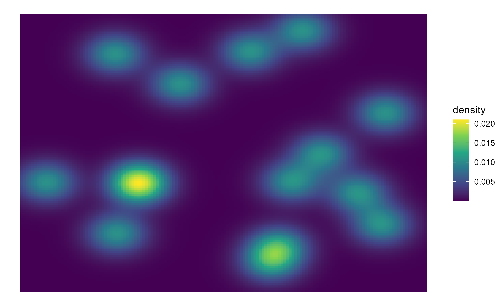
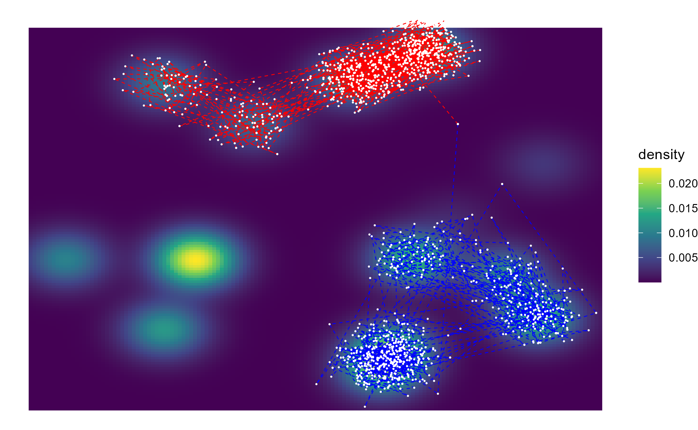

Multivariate Mixtures
multivariate-mixtures.RmdThis vignette aims to show how different sampling algorithms may navigate a ‘patchy’ environment. Let’s start by creating such an environment.
First, we create a matrix with what will be the means of 15 different Gaussians
set.seed(1)
# Create a matrix with the means of 15 different Gaussians
names <- rep("mvnorm", 15)
parameters <- list()
for (i in 1:15){
parameters[[i]] <- list(runif(2) * 18 - 9, diag(2))
}We’ll also require a set of weights (which in this case will all be random). If using equal weights, you will not need to include the weights as a function parameter.
The probability density function is the weighted sum of each of the density functions
pd_func <- function(x, log = FALSE){
densities <- vector()
for (i in 1:length(weights)){
densities[i] <- mvtnorm::dmvnorm(x, mean = parameters[[i]][[1]], sigma = diag(2), log = log)
}
return(sum(densities * weights))
}We can now draw a map of the density
mapDensity <- function(pdf, start, size, cellsPerRow = 50){
# start is a vector <- c(x, y)
# size is a number n so that the map ranges from x, y to x + n, y + n
xRange <- seq(from = start[1], to = start[1] + size, length.out = cellsPerRow)
xxRange <- rep(xRange, cellsPerRow)
yRange <- seq(from = start[2], to = start[2] + size, length.out = cellsPerRow)
for (i in 1:cellsPerRow){
if (i == 1){
yyRange <- rep(yRange[i], cellsPerRow)
} else {
yyRange <- c(yyRange, rep(yRange[i], cellsPerRow))
}
}
density <- vector()
for (i in 1:length(yyRange)){
density[i] <- pdf(c(xxRange[i],yyRange[i]))
}
df <- data.frame(x = xxRange, y = yyRange, density = density)
return(df)
}
hills_df <- mapDensity(pd_func, c(-10,-10), 20, 150)
hill_map <- ggplot(hills_df) +
geom_raster(mapping = aes(x = x, y = y, fill = density)) +
scale_fill_viridis_c() +
theme_void()
print(hill_map)
plotPath <- function(df){
path <- hill_map +
geom_path(df, mapping = aes(x,y), colour = "red", linetype = "dashed", size = .3) +
geom_point(df, mapping = aes(x,y), colour = "white",size =.1)
print(path)
}An MCMC sampler may not be able to explore the whole of the space, as it is unable to make long jumps
iterations = 2**10
MCMC <- sampler_mcmc(distr_name = names, distr_params = parameters, start = c(5,5),
sigma_prop = diag(2) / 8, iterations = iterations, weights = weights)
MCMC_df <- data.frame(x = MCMC[[1]][,1], y = MCMC[[1]][,2])
plotPath(MCMC_df) An MC3 sampler, on the other hand, runs hotter chains under the hood with which it switches stochastically, which allows it to visit far-off regions and thus explore the whole hypothesis space
An MC3 sampler, on the other hand, runs hotter chains under the hood with which it switches stochastically, which allows it to visit far-off regions and thus explore the whole hypothesis space
MC3 <- sampler_mc3(names, parameters, c(5,5), sigma_prop = diag(2) / 8,
swap_all = FALSE, iterations = iterations, weights = weights)
MC3_df <- data.frame(x = MC3[[1]][,1,1], y = MC3[[1]][,2,1])
plotPath(MC3_df)